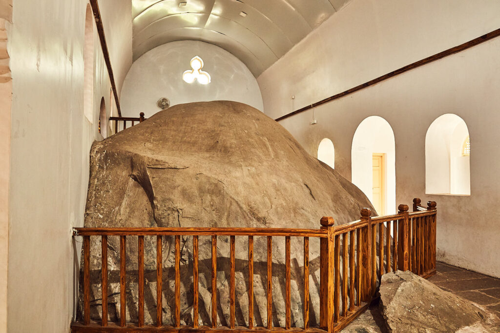

Ashoka’s Rock Edicts belong to 250 BC where around 14 edicts of Ashoka are located on the route to the Mount Girnar Hills.
This rock edict is a huge stone and the carving in Brahmi script in Pali language mention the resistance to greed and animal sacrifice and also moralize the principles of purity of thought, secularism in thinking, kindness and gratitude.
The other major part of Junagadh’s Buddhist heritage are the stone edicts of Emperor Ashoka, found on the road towards Mt. Girnar.
When Ashoka famously converted to Buddhism and renounced violence, on his way to being one of India’s most revered and respected rulers of all time, he had edicts carved in stone and placed in sites all across India (ranging as far as Kandahar in present-day Afghanistan in the West, modern Bangladesh in the East, Andhra Pradesh in the south) with precepts for living a virtuous life, respecting others and creating a just society.
Speaking in moral and ethical terms, not religious ones (though the Buddha is mentioned), the edicts reach out across faith traditions.
Tellingly, in Junagadh one edict that is visible (though you won’t understand it unless you read Pali) reads: “To foster one’s own sect, depreciating the others out of affection for one’s own, to exalt its merit, is to do the worst harm to one’s own sect.”
This is wise counsel calling to us from 2300 years ago.
The site of the edicts is open every day from 8am-6pm.
Entry is Rs.5/- for Indians & Rs.100/- for Foreigners.